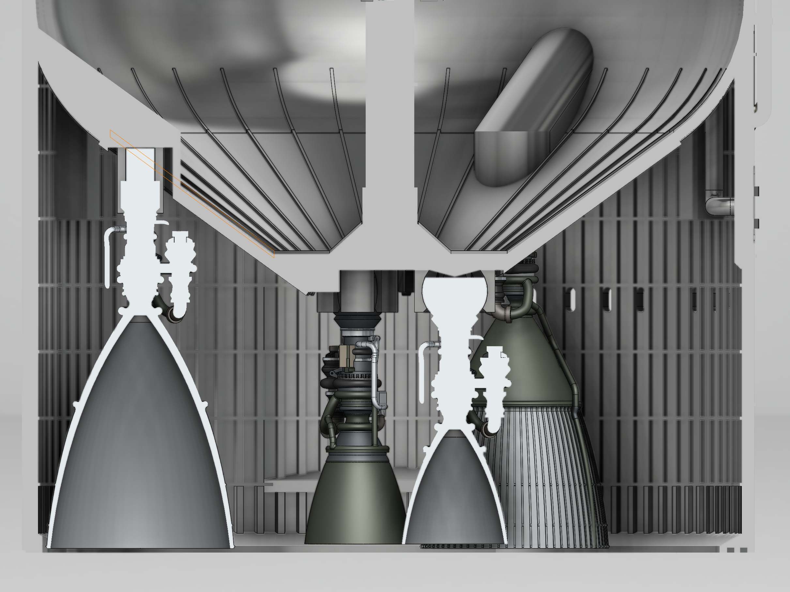
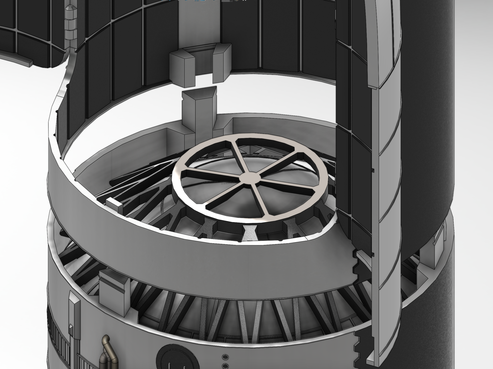

3D Printed SpaceX Starship Model
This personal project involved designing, prototyping,
and 3D printing a 1:100 scale model of SpaceX's Starship. The goal was to faithfully recreate the ship in SolidWorks with extreme detail and accuracy,
with functional joints to replicate engine and aero surface actuation.
Constraints included only using available photo references and
optimizing material usage. This project highlights skills in parametric design, surface modeling, and
problem-solving, showcasing my ability to manage a design's full lifecycle from concept to completion.


Process and methodology

To create the 1:100 scale model of SpaceX's Starship, I began by gathering detailed reference materials, including
technical drawings, photos, and schematics, to ensure accuracy. Using SolidWorks, I applied parametric design techniques
and surface modeling to develop the core geometry, while enabling me to efficiently adjust dimensions across complex geometries. I tested various configurations for features like aerodynamic fins
and engine mounts, focusing on accuracy, simplicity, and faithfulness to the original reference.
For prototyping, I conducted small-scale test prints to verify tolerances and joint functionality while minimizing
material waste. I iteratively refined the model, adjusting tolerancees and print settings for smooth actuation, strength/weight balance, and surface finish.
After successful tests, I printed the full scale model in separate parts. The final result demonstrated an engineering approach that balanced design precision with practical constraints.
Challenges and reflection

- The use of parametric design in SolidWorks ensured that dimensional adjustments were quick and seamless, enabling rapid
iterations without starting from scratch.
- SolidWorks surface modeling was chosen to capture the smooth, aerodynamic contours of the
spacecraft, which were critical for realism.
- Snap fit hinges and couplers were used throughout the project, to remove the requirement of magnets or screws, make parts detachable without tools, while allowing me to gain experience in snap fit design and tolerancing.
- Functional joints were incorporated to replicate the Starship’s moving
parts, providing both a visual and mechanical representation of its capabilities.
- The iterative prototyping approach was chosen to minimize material waste and reduce the likelihood of failed prints,
ensuring that each stage of the project contributed directly to the final design. For example, testing small-scale
components helped refine tolerances and optimize print settings for complex geometries.
Through this project, I gained valuable insights into the importance of balancing precision and practicality in design.
I learned how to troubleshoot issues such as layer adhesion and warping during 3D printing, and how to adapt designs to
fit the limitations of different printing technologies.
Overall, the project was executed successfully, with the final model meeting its goals for accuracy and functionality.
It showcased my ability to manage a complex design process while demonstrating adaptability and problem-solving skills
in overcoming technical challenges.